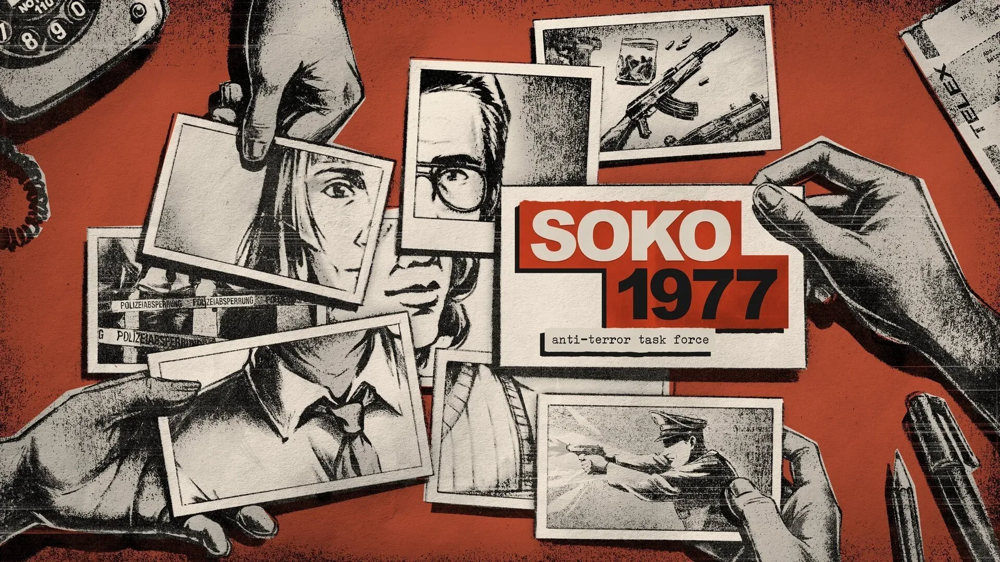
Soko 1977
Internship - Paintbucket Games
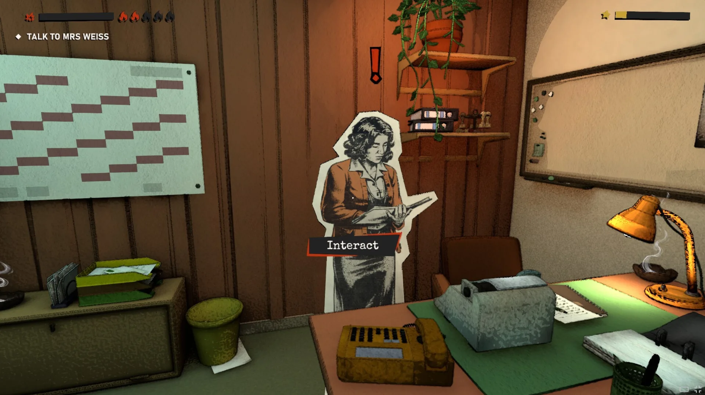
Soko 1977
4-month Gameplay Programming internship in Berlin.
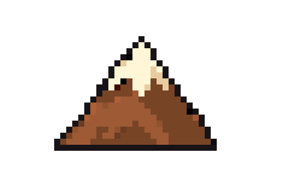


4-month Gameplay Programming internship in Berlin.
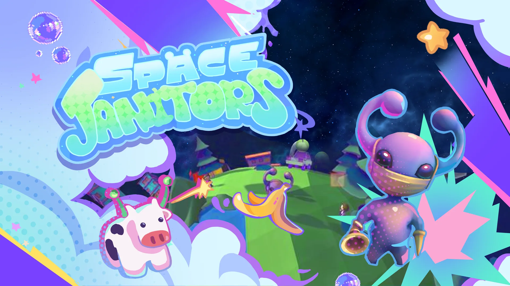
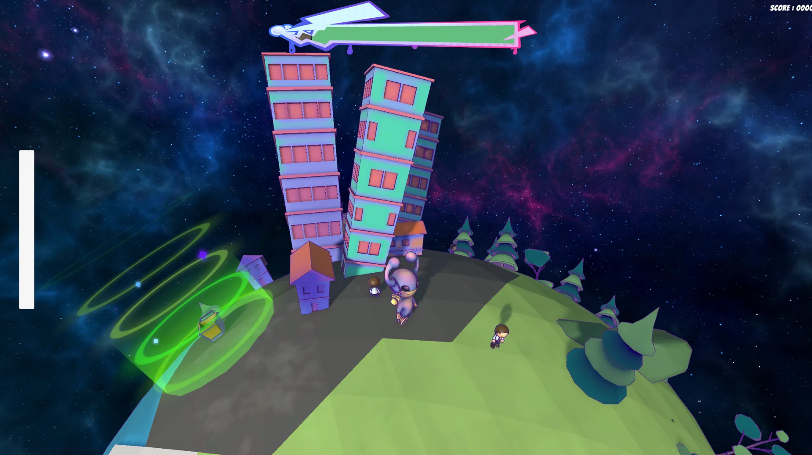
4-day game jam about the carbon footprint.
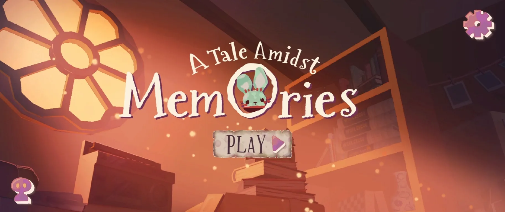
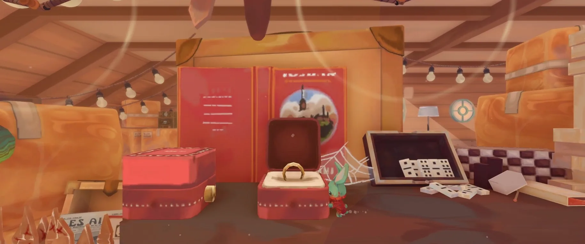
Focusing on game feel and smooth character controller mechanics.
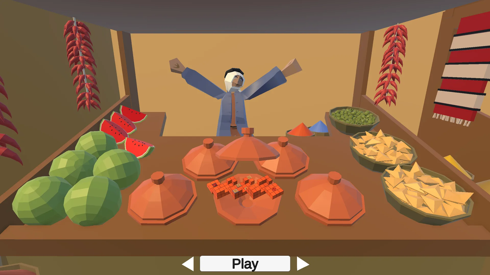
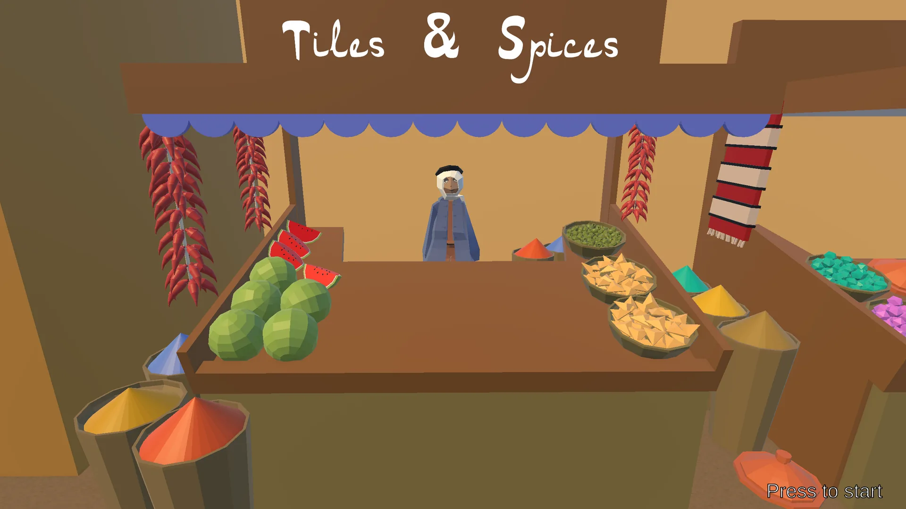
Recreation of the 2010 game Rush with my original theme: the Souk.
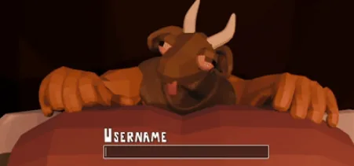
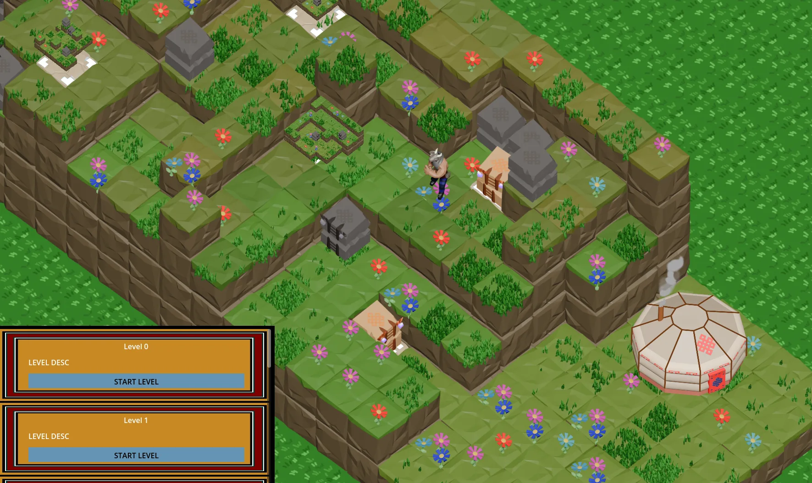
First group project using Git.
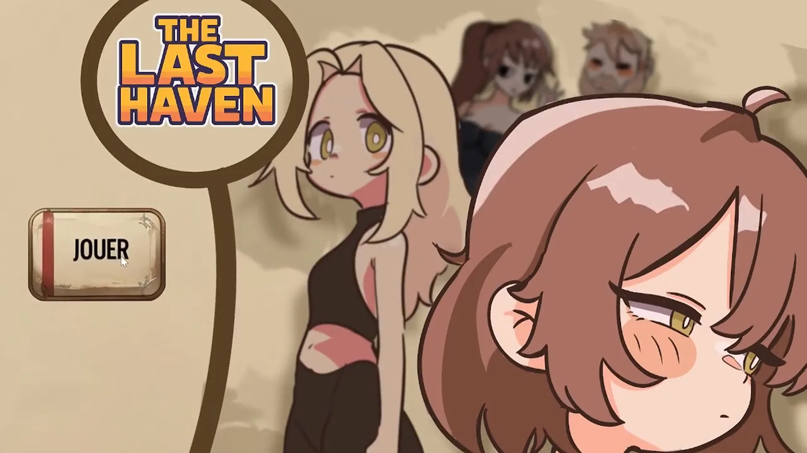
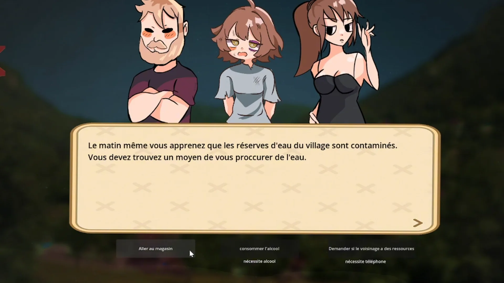
Game Jam for the Red Cross
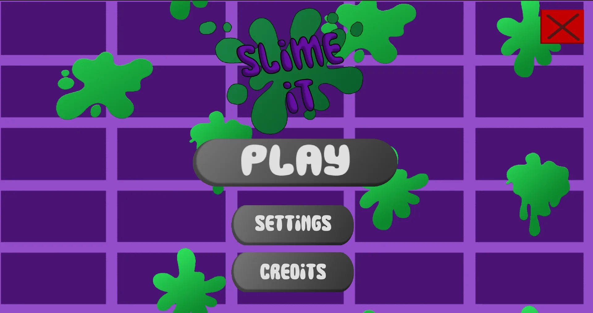
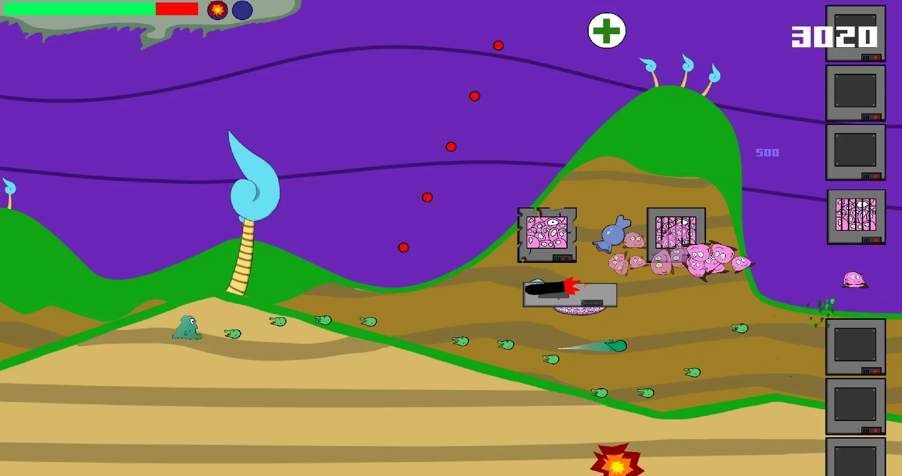
First project made at ISART Digital
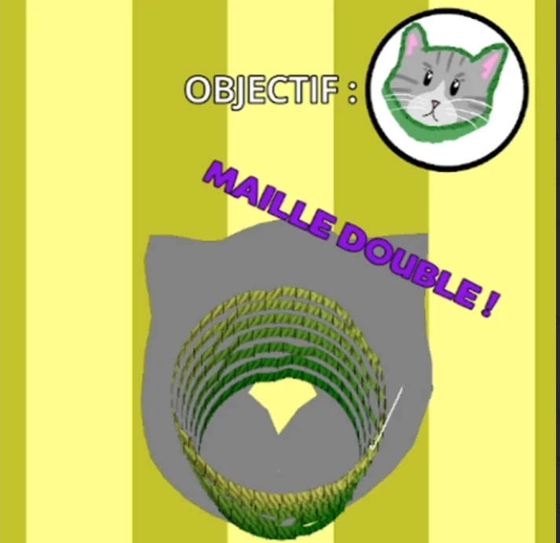
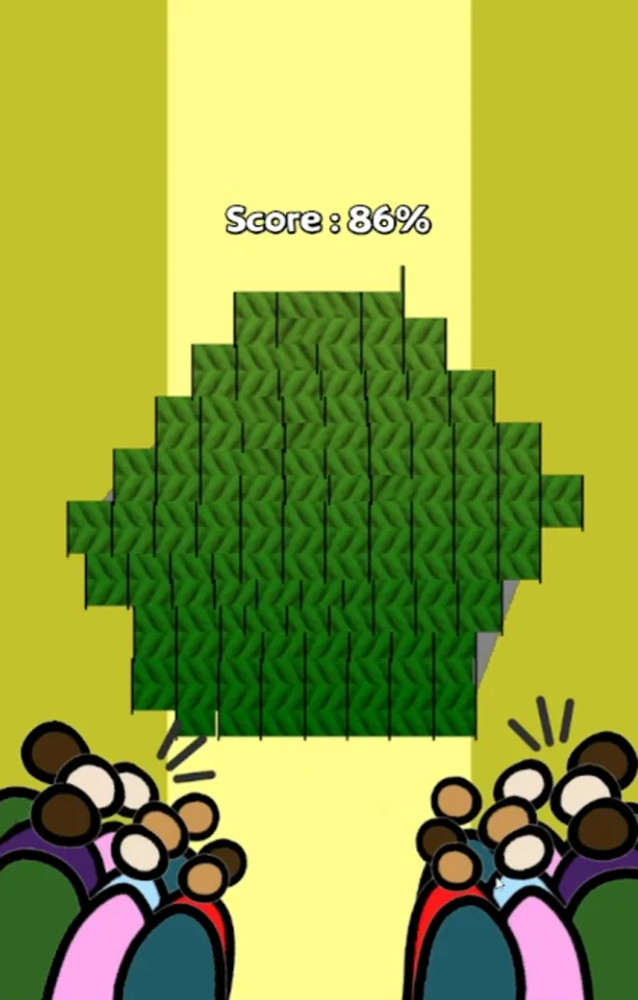
Mobile game to learn the logic of crochet
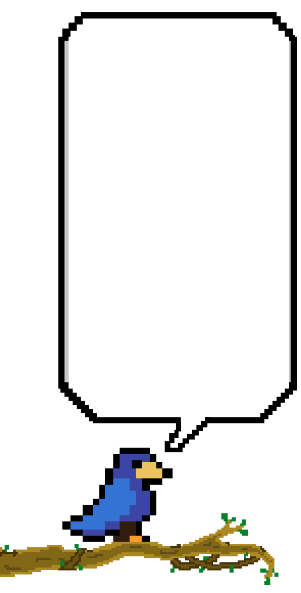